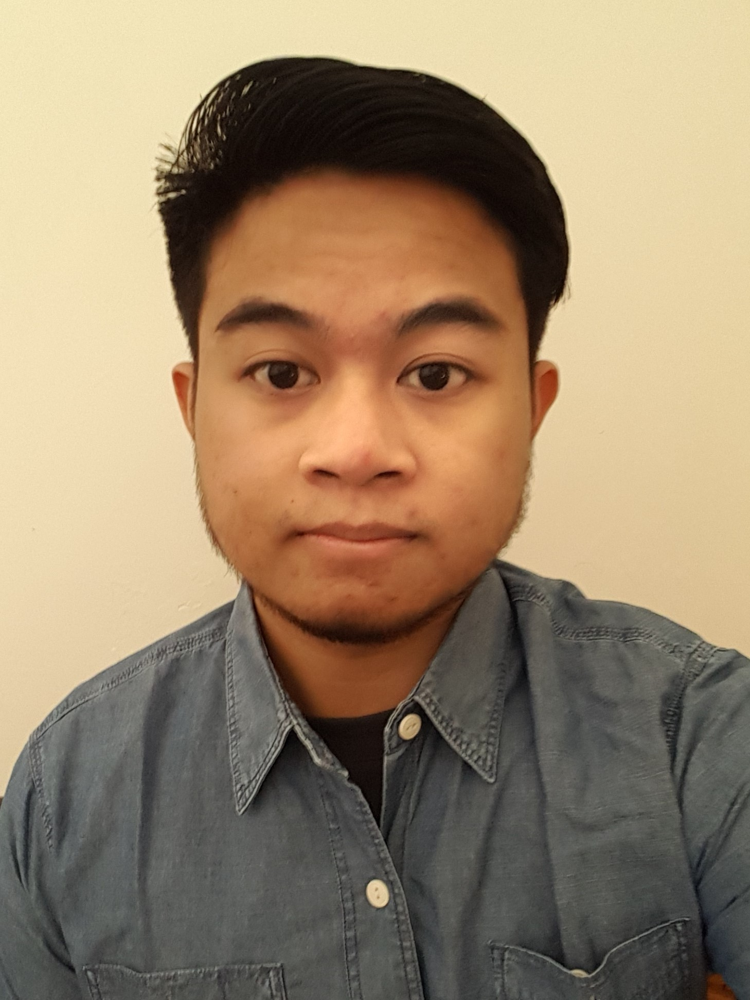
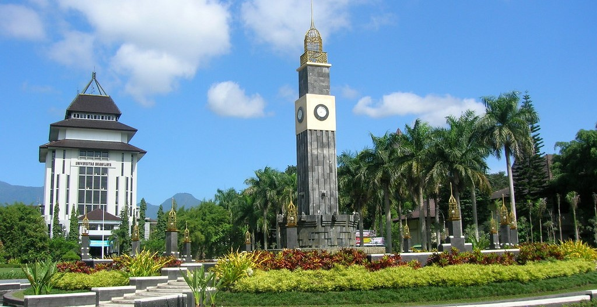

Hi, I'm Mochammad Arie Nugroho, an Electrical Engineer and Magister Student of Management at University of Brawijaya. Here I start my journey to become a Data Scientist. Let's connect with me.
Check my project here:
EDUCATIONAL BACKGROUND
UNIVERSITY OF BRAWIJAYA

University of Brawijaya is one of the best universities in Indonesia to date. in mid 2018 I successfully completed my Bachelor Degree studies in Electrical Engineering at University of Brawijaya with a final GPA of 3.06. I took the sub-field of Control Engineering while studying in Electrical Engineering and took several research projects while studying there and was active in various campus organizations.
After I graduated I worked for less than a year in 2019 and in 2020 I chose to continue my studies in Master of Management at University of Brawijaya with a sub-concentration of Strategic Management. Until now I am still studying there. In that process I was interested in continuing my career as a data scientist so I tried to learn to develop my Data Science skills by studying independently and participating in several bootcamps such as dibimbing.id in order to learn data science effectively.
working experience
PT Mulia Industrindo Tbk. (Jan 2019 - June 2019)
As a Management Trainee in the Engineering Maintenance Division the main job is implementing continuous improvement projects on ceramic body preparation. Daily work is to supervise the daily checking of tools by technicians and perform preventive maintenance. At the final phase of OJT doing project improvement on PPB Pump nasseti type and updating Work Instructions based on the existing manual book then conducting training for new work instructions.
PT Transportasi Gas Indonesia (Oct 2017 - Dec 2017)
As an Internship Technician, the daily job is to calibrate Pressure Transmitter and Temperature Transmitter in the Gas Metering Station and get a project to design a Gas Vent Stack security system using Siemens PLC Controller.
organizational experience
HMP FEB University of Brawijaya (Feb 2020 - Dec 2021)
As a Secretary of Public Relations Division heve responsible for holding and creating social media content for HMP FEB UB and become an intermediary between internal organizations and external parties such as outside companies or the government. Main Committe in webinar “Kajian Mahasiswa Pascasarjana 2020”, “BREFERENCE 2020”, “Webinar Keuangan Level Up 2021”, “BREFERENCE 2021” .
RKIM University of Brawijaya (Mar 2015 - Apr 2018)
As Expert Staff Riset and Development responsible for doing research in science field and Train junior staff in writing scientific papers and instruct junior staff in every competitions in the electrical field. Become main committee of “2016 RKIM Training”, “2017 RKIM Training”, “2016 RKIM CUP”.